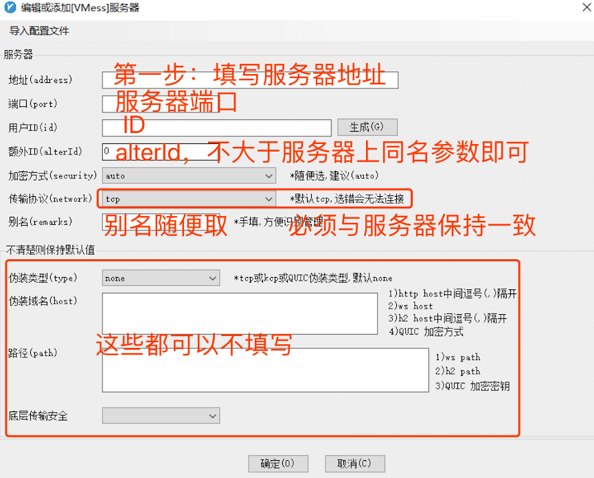
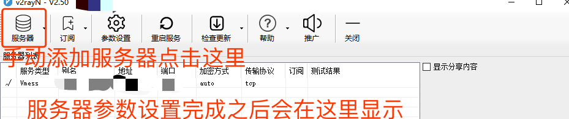
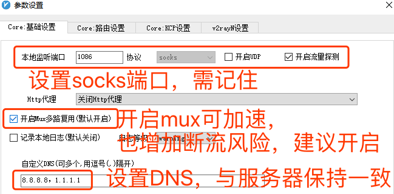

Windows V2rayN-core 客户端配置3步教程
-
Windows下的客户端也很多，这里选择V2rayN-core，记住是下载这个带Core后缀的文件才能正常使用。目前国内使用Windows的用户群体最大，而V2rayN-core也确实提供了简单直观的配置方式，即使是小白用户也能快速配置完成。
-
第一步：添加服务器参数。如果有二维码，直接右键然后选择扫描二维码即可。没有二维码时，点击软件右上角的服务器，选择添加vmess服务器就会出现下图界面。然后按图填写即可。

-
第二步：检查服务器参数。如果时二维码扫描的，这里会自动加载服务器的参数；如果时手动填写的，关键参数也会显示在这里。

-
第三步：填写本地参数。点击主界面上的“参数设置”，然后出现下图界面。按照图示填写相关参数。其中socks的端口需要记住。在chrome浏览器中设置需要用到。
